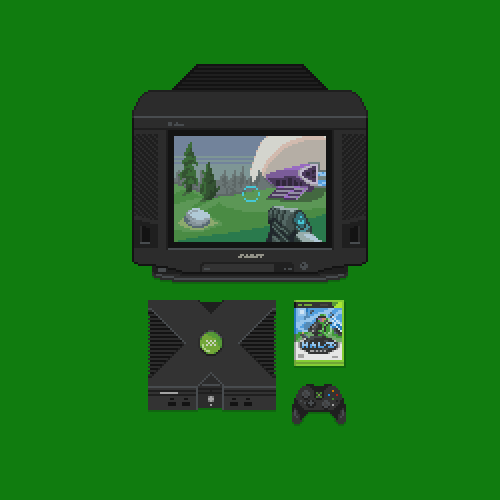
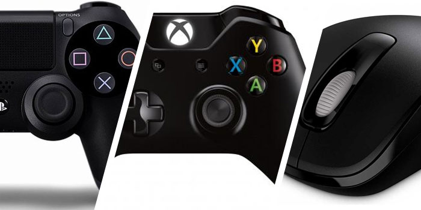

PC gaming versus console gaming: the topic that has plagued the internet for years. But which one is truely superior? I'm personally favoured towards PC gaming, but I can agree that there are benefits for console gaming. Lets compare and find out which one is truely superior.

However, console gaming is a lot cheaper to get into then pc gaming. It also has a much larger market for buying physical games, so if you like game cartriges or CDs in your collection, then console gaming might be for you. Also, there are some very good console exclusives, such as Nintendo games, and more dlcs in Call of Duty on PS4. Also, gaming on console is a lot simpler to set up, so if you're not particularly tech savvy, console gaming might be for you. They also come with one controller, so you don't have to buy it seperate.
Another growing topic about PC gaming is emulation. Emulation is the use of a program to mimic another type of computer's functions. This has been used to play many games designed for other systems on PC. Many would argue that emulation is a shady thing to do, because of the often illegally obtained copies, or ROMS of the games being played. At the same time, emulation is growing constantly with systems such as a Playstation 3 emulator, named RPCS3, growing steadily. A recent breakthrough in emulation came with the more recent emulator, Cemu, meant to emulate Nintendo's Wii U console. Because of the growing popularity and tens of thousands of dollars of monthly donations, the developers of Cemu have been putting out updates every few weeks, and as a result, several titles now play better on the emulator then on the original console! Emulation has been growing outside of PC as well, with many emulators being made for mobile devices, and even consoles! Eventually, most consoles will be emulated, whether it takes 6 months or 6 years. The community behind emulation is huge, and is definitely one of my favourite parts about PC.
Steam is a huge platform on PC for buying games and trading virtual items, as well as joining communities and making friends. There are hundreds of new games being added to steam all the time, some free, but many paid. One of the highlights of steam is the accessibility for indie developers to have a chance to sell their new game or software. If there is a huge new game for PC that everyone is talking about, chances are you can find it on steam. Steam also offers a system to easily organize multiplayer gaming with friends, and makes it simple to communicate with other people. As I mention earlier, steam also has a huge online market for virtual items. Popular games like Counter Strike: Global Offensive and Team Fortress 2 have certain items that can sell for $500, or even more! And the best part about all this is that Steam is completely free to use, unlike some consoles multiplayer features, such as the Playstation Plus $50 cost to use per year, and the Xbox Live cost of $60 per year.
In conclusion, consoles can offer a good gaming experience with great games and exclusives at a much lower price, but in the end, PC wins features wise. With the ability to multitask, emulation, better game platforms like steam, and more, PC just seems like a better choice to go for. Thank you for reading, and I hope this has given you some idea over the distinction of PC gaming and Console gaming
Check out my sources here